VolMarker user guide
Marking, publishing and monitoring FX and precious-metal vol surfaces · November 2026
VolMarker is the desk's shared tool for marking vol surfaces. It replaces the Excel marking sheets. Everyone works on the same set of pairs: what one trader publishes shows up on the others' screens within about a second, and is written straight to the Fenics and Front Arena files. Every version is kept, with its time, user and comment.
This guide walks through the screen from top to bottom, then covers event weights, pair settings, market data and alerts. The last section lists the settings in config.json, for whoever sets VolMarker up.
Contents
- Starting VolMarker
- The screen at a glance
- The pair list
- Marking a surface
- Market data in the grid
- Shifts, market levels and skew
- Publishing
- Derived, spread and following pairs
- Changes, 3D and History
- Event weights
- The event calendar
- Pair settings (Setup)
- Market alerts
- Fenics login and the FMD feed
- Display settings
- How expiry dates are worked out
- Files, history and the leader app
- Troubleshooting
- Keyboard shortcuts
- Settings for administrators
1. Starting VolMarker
Each trader runs VolMarker on their own PC. All copies point at the same shared data folder, which is how they share pairs, marks and settings.
- Double-click
VolMarker.bat(or runpython -m volmarker --data "…\vol_data"). - A browser tab opens at
http://127.0.0.1:18765. Keep the small console window open while you work; closing it stops VolMarker.
2. The screen at a glance
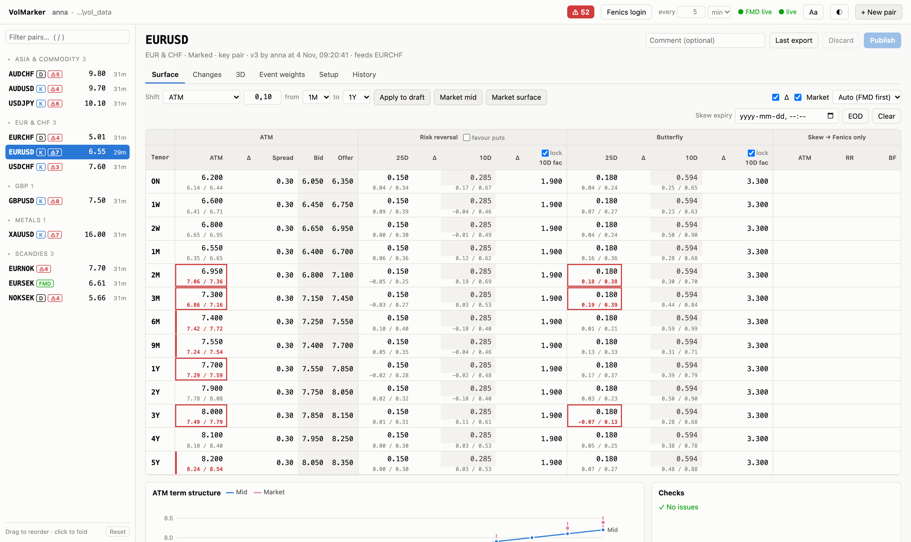
Top bar
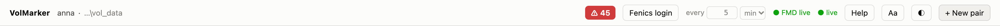
| Item | What it does |
|---|---|
| User · folder | Who you are logged in as and which shared data folder VolMarker uses. |
| ⚠ 45 | Market alerts. Red while some are not acknowledged. Opens the alert panel (section 13). |
| Fenics login · every 5 min | Log in to Fenics to fetch FMD 1.0 vols, and how often (section 14). |
| Bloomberg | Start Bloomberg for the desk's Bloomberg pairs until the next stop (18:00 or midnight). Shows BBG: you while yours runs, or who else runs it (section 14). |
| ● FMD live | The market data feed is running. FMD off means no market levels. |
| ● live | Your connection to the shared folder. If it turns red, others' changes are not reaching you. |
| Help | Opens this guide in a new tab. |
| Aa | Text size, font and contrast for your PC only (section 15). |
| ◐ | Light or dark mode. |
| + New pair | Adds a pair for the whole desk. |
Pair header and tabs
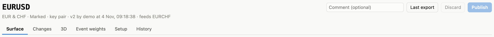
Under the pair's name you see its group, mode, the version on screen, who published it and when, and which pairs depend on it (feeds EURCHF). On the right are the comment field and the Last export, Discard and Publish buttons. The tabs below are:
| Tab | Use it for |
|---|---|
| Surface | Marking: the grid, market levels, the ATM chart and checks. |
| Changes | Today's marks against an earlier day's end of day. |
| 3D | The surface as a rotatable 3D picture. |
| Event weights | Day weights, events, test dates, dailies and the event calendar. |
| Setup | The pair's settings: mode, bases, cut, group, alerts and more. |
| History | Every published version, with a Restore button. |
3. The pair list
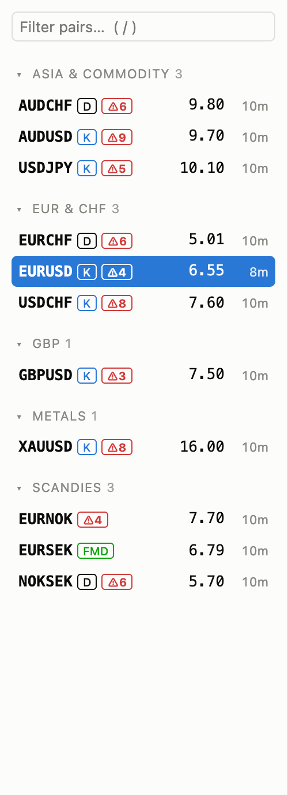
Pairs are listed by group (EUR & CHF, Scandies, Metals, …) with their 1M ATM and the time since the last publish. Click a pair to open it. Type in Filter pairs… (or press /) to find one quickly.
| Tag | Meaning |
|---|---|
| K | Key pair: tighter staleness limit (2 hours instead of 24). |
| D | Derived from two base pairs through the correlation triangle. |
| P | Moves with a spread parent. |
| FMD | Follows the market: green ok, amber a move is being held, red not updating. |
| XL | Marked in Excel. Red: the last file couldn't be read. XL?: its file was changed outside VolMarker. |
| skew | A skew is active on the Fenics file. |
| stale | Not marked within its limit. |
| !3 | Number of failed checks (e.g. calendar arbitrage). |
| ⚠4 | Open market alerts (grey once acknowledged). |
The order is yours: drag groups, or pairs within a group, to rearrange them, and click a group header to fold it. A folded group still shows its stale and ⚠ counts. Your layout follows you to any PC. Reset at the bottom goes back to A–Z.
4. Marking a surface
The grid has one row per tenor (ON to 5Y, less any the pair doesn't mark, plus its extra tenors). For each tenor you mark the ATM, the 25D and 10D risk reversal and the 25D and 10D butterfly (broker strangles). The spread sets the Fenics ATM bid/offer around the mid. The grey Bid and Offer columns are what Fenics gets, including any skew.
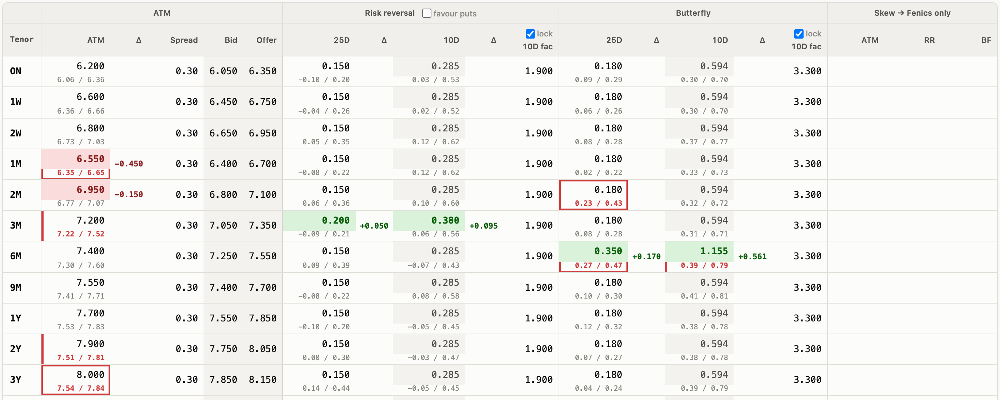
Editing
- Click a cell and type. Nothing is sent until you Publish; until then you are editing your own draft.
- Enter, ↓ and ↑ move between tenors; Tab moves across.
- Esc restores the value the cell had when you entered it. A second Esc goes back to the published value.
- Linked cells update as you type: the 10D quote or factor, the correlation on a derived pair, the spread to a parent.
Colours and the Δ columns
- Green: an ATM, RR or BF above the published value. Red: below it. Yellow: any other changed cell (spread, factor, skew).
- The Δ column next to ATM, 25D/10D RR and 25D/10D BF shows the change from the published value, e.g.
-0.450. It stays empty for unchanged tenors. Untick Δ above the grid to hide these columns. - Blue ATMs are calculated (derived or moving with a parent). Pink values come from the FMD feed. Grey cells are read-only.
10D: factor or quote
Each 10D has a lock box above its factor column, separately for RR and BF.
- Ticked: you type the factor; 10D = 25D × factor and the 10D is read-only.
- Unticked: you type the 10D quote; the factor is worked out as 10D / 25D. Moving the 25D then keeps the 10D and recalibrates the factor.
Extra tenors, removed tenors and extra deltas
A pair can carry more than the standard tenors and 25D/10D, or fewer tenors. This is a pair setting: on the Setup tab, under Tenors and deltas, and it takes effect when you press Setup's Save (section 12). Marks you are editing stay in your draft. After saving, mark the new tenor or delta on the Surface tab and publish as usual.
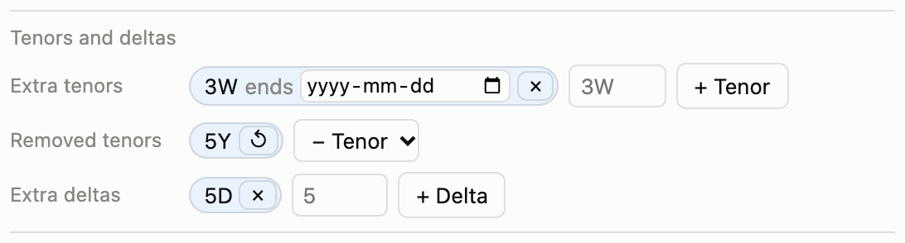
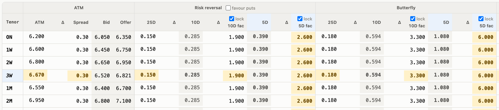
- Extra tenor: for example 3W when an event falls between 2W and 1M, or 4M or 5M. Type it and press + Tenor (weeks, months or years:
3W,4M,18M). The new row starts at the ATM the curve already gives its expiry with the event weights, so adding it changes nothing until you mark it. RR, BF and spread are interpolated from the neighbouring tenors. - An extra tenor is marked, checked and exported like any other (Fenics
3w, Front Arena3wk), and the event-weight interpolation uses it as a pillar. Hover over it for its expiry date. - It stays until you remove it with ×. To have it go by itself, give it an end date in its box: on that day VolMarker removes it and publishes a new version.
- Removed tenor: a standard tenor that isn't relevant for the pair, e.g. everything beyond 2Y. Pick it in − Tenor. It leaves the grid, the checks and the Fenics and Front Arena files, and the curve between the event weights no longer uses it. Its history is kept. ↺ brings it back, starting on the curve, like a new tenor. A derived pair that still marks a tenor one of its base pairs has removed keeps its own ATM there, and Checks says so.
- Extra delta: for steep wings, for example 5D or 1D (or 30D, inside the 25D). Type the delta and press + Delta. It gets RR and BF columns with a factor and a lock, exactly like the 10D. The starting factors are generic (5D: RR 2.6, BF 6; 1D: RR 4, BF 12), so check them on the Surface tab after saving.
- Extra deltas go to Fenics and Front Arena after the 25D and 10D, and appear in Changes, 3D, the market levels and the alerts (with the 10D's tolerance).
- On a derived pair, an extra tenor is derived only if both base pairs carry it too; otherwise you type its ATM. The same goes for a pair moving with a parent. Pairs marked in Excel keep the standard tenors and 25D/10D.
Favour puts
For pairs whose skew favours puts (USDJPY, for example), tick favour puts next to the Risk reversal heading. The grid, the market levels, the alerts and the shift toolbar then show RRs as put − call, so you type 1.25 instead of -1.25. Only the display flips: the stored marks and the Fenics and Front Arena files stay call − put. It is a pair setting, so publish to share it with the desk.
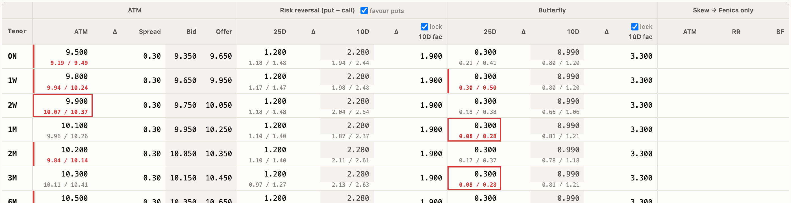
Below the grid
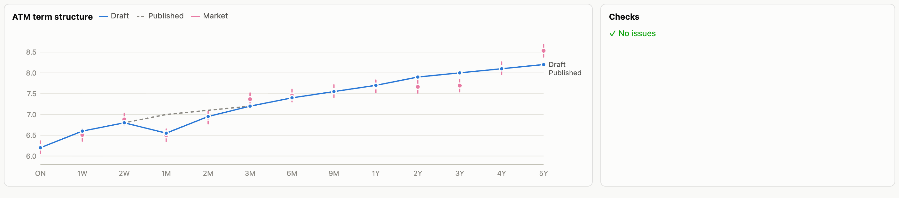
The ATM term structure chart shows your draft (blue) against the published curve (dashed) and the market mids with their bid/offer (pink). Hover for the values. Checks lists problems: a missing ATM, a non-positive bid, calendar arbitrage (total variance falling between tenors) or a correlation outside −1 to 1.
5. Market data in the grid
When the FMD feed is running, the broker bid/offer appears in small type under each ATM, RR and BF mark.
- A red bar on the left of a cell: your mark is outside the broker range.
- A red frame: an active market alert on that mark.
- Faded levels are older than 30 minutes; Market mid skips them.
- A
*means the broker only quoted the other ATM convention (DNS vs ATMF). - Click a broker level to put its mid in your draft.
The Market box above the grid hides or shows the levels. Next to it you choose the source: Auto (FMD first) uses the FMD composite, then FMD 1.0 from Fenics, then the individual brokers; Best of brands takes the highest bid and lowest offer; or pick a single broker.
6. Shifts, market levels and skew
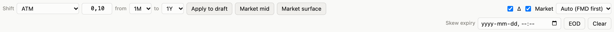
| Control | What it does |
|---|---|
| Shift · amount · from · to | Pick a field (ATM, RR, BF, …), an amount and a tenor range, then Apply to draft for a parallel shift. |
| Market mid | Sets the chosen field to the broker mid over the tenor range. |
| Market surface | Takes ATM, RR and BF (every delta the pair marks) from the market over the range. |
| Skew expiry · EOD · Clear | When the skew expires. EOD sets 17:00 today; Clear zeroes all skews. |
Taking market levels only changes your draft; nothing is published until you press Publish. On a derived pair or a pair moving with a parent, taking the market ATM recalibrates the correlation or the spread to it.
Skew
The three Skew → Fenics only columns shift ATM, RR and BF in the Fenics file only; Front Arena always gets the pure mids. Set an expiry (or press EOD). When it passes, VolMarker publishes a clean version by itself.
7. Publishing
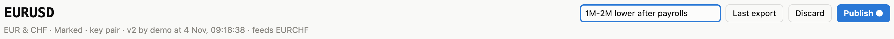
- Optionally type a comment, e.g. 1M–2M lower after payrolls. It shows in the History tab.
- Press Publish or Ctrl+S.
Publishing saves a new version, writes the Fenics and Front Arena files, and moves every pair that depends on this one (derived crosses, pairs moving with it as a parent) a moment later. Discard throws your draft away.
- Someone else published first? VolMarker stops and tells you, and never overwrites their version silently. Versions the feed or a base pair made in the meantime are not a conflict: your edits are kept on top of them.
- Last export loads the pair's current Front Arena file into your draft, e.g. after someone marked it in Excel. Check it and publish.
- Every manual publish also stores the market mids at that moment, for the audit trail.
8. Derived, spread and following pairs
Derived pairs (correlation triangle)
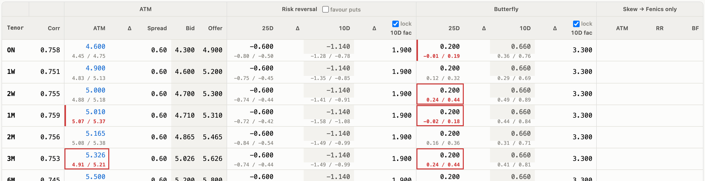
A derived pair's ATM comes from its two base pairs and a correlation per tenor: σ² = σ₁² + σ₂² − 2·ρ·σ₁·σ₂. This is the triangle correlation, as in the Excel workbook, whichever way the bases are quoted, so EURCHF from EURUSD and USDCHF has a strongly positive correlation.
- When a base is published, the derived pair follows by itself.
- Type an ATM to calibrate that tenor's correlation to it; the pair then keeps running off its bases.
- Untick Move with bases (Setup) to hold the ATMs where they are while the bases move. The correlation (grey) then shows what they imply.
- RR and BF are marked by hand, as in Excel.
Spread to a parent
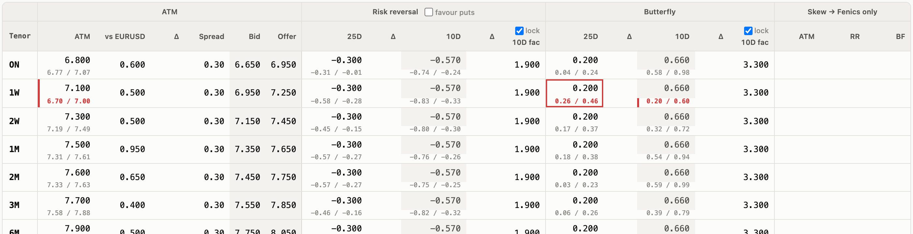
Set a Spread parent in Setup to get a column with this pair's ATM minus the parent's published ATM. Type either one: an ATM updates the spread, a spread sets ATM = parent + spread. Tick Move with parent to keep the spreads instead: every publish of the parent then moves this pair's ATMs, which show in blue.
Follow market (market mode)
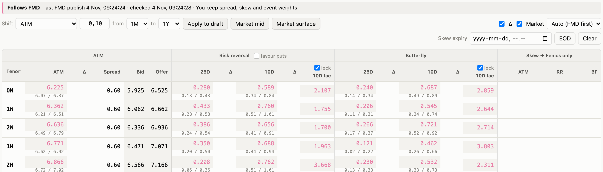
Tick Follow market in Setup and the feed publishes the mids of the pair's market source (FMD or Bloomberg, set in Setup) for ATM, 25D/10D RR and BF by itself, through the normal publish. It takes only that source, never a mix: a Bloomberg pair whose Bloomberg quote is missing keeps that mark's last value rather than take FMD's. You keep the spread, skew and event weights.
- It publishes when any mark has moved at least 0.05 vol, at most every 15 seconds.
- Jump guard: a very large move is held for a minute and taken only if it is still there. Meanwhile the pair is amber and an alert explains.
- Feed down: nothing is published, Fenics keeps the last levels, the pair turns red and everyone gets an alert.
- Bloomberg not running between 18:00 and 07:00: a Bloomberg pair keeps its last levels until Bloomberg is started again. That is expected, so there is no alert. From 07:00 to 18:00 a Bloomberg pair that isn't updating (Bloomberg not started yet, or stopped by hand) raises the usual alert.
- Untick Follow market and save to take the pair back; the current levels become your marks.
Marked in Excel
For pairs still marked in the Excel workbook, tick Marked in Excel in Setup. VolMarker then reads the pair's Front Arena file whenever Excel writes a newer one and publishes it as a new version. Its marks are read-only in VolMarker and VolMarker never writes its files. If a pair not marked in Excel has its file changed by someone else, everyone gets an alert, because the two would overwrite each other.
9. Changes, 3D and History
Changes
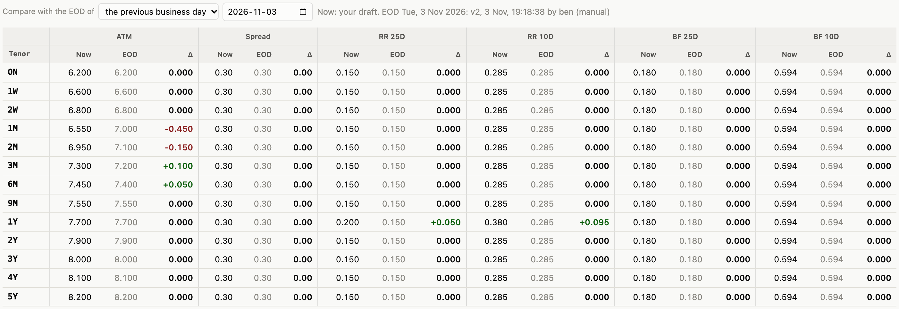
Today's marks next to an earlier day's end of day, per tenor: Now, EOD and Δ (green up, red down). The EOD of a day is the last version published before midnight. By default you compare with the previous business day (on a Monday, Friday's); pick one week ago or any date instead. Now is your draft, so the Δ follows your edits before you publish.
3D
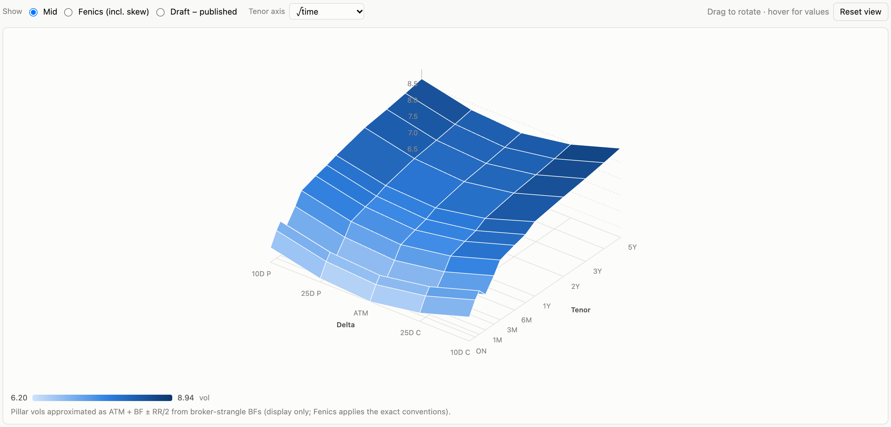
The surface over delta (10D put to 10D call, or the pair's widest extra delta) and tenor. Drag to rotate, hover for values. Show the mid, the Fenics surface with skew, or Draft − published to see your unpublished changes. The wings are an approximation (ATM + BF ± RR/2), for display only.
History
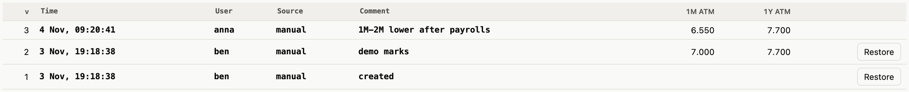
Every version with its time, user, source (manual, market, propagation, Excel…) and comment. Restore copies an old version into your draft; check it and publish. Nothing is ever deleted: old months are archived and still show here (section 17).
10. Event weights
Event weights decide how the ATM is interpolated between the marked tenors, so that event days carry more variance than quiet days and weekends carry little. The method is the one in the desk's Excel weight workbook and in Fenics:
day weight = weekday weight × holiday factor(ccy1) × holiday factor(ccy2) + events
Total variance is interpolated linearly in weighted time between the marked tenors.
Day weights
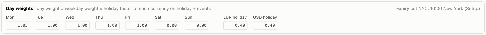
Seven weekday weights (e.g. Monday 1.05, Tuesday to Friday 1, weekend 0) and a holiday factor per currency (e.g. 0.4) that applies on that currency's holidays. A holiday in both currencies gives 0.4 × 0.4.
Events
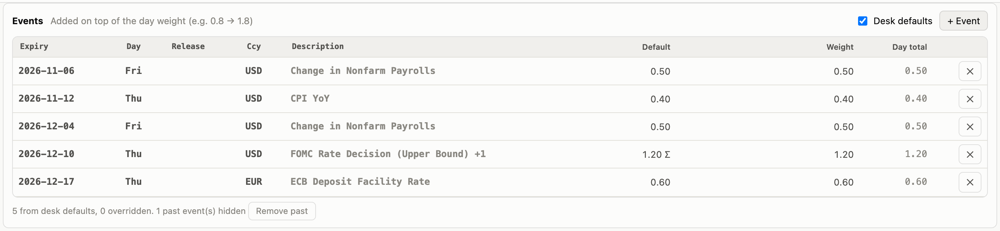
The pair's events, each on the option expiry it weighs on, with its release time, currency, the desk default and the weight used. Events from the desk's list (section 11) come in by themselves.
- Type a weight to override the default for this pair; ↺ goes back to the default;
0switches the event off but still sends it to Fenics and Front Arena. - ✕ deletes an event for this pair (a desk default for this pair only): it leaves the curve and isn't sent to Fenics or Front Arena. It is kept with its weight, including one you had typed, in case it was a mistake: Show deleted under the table lists the deleted events, struck through, and ↺ brings one back as it was. Publish to apply either.
- + Event adds a one-off (an election, say). The new row is empty and at the top: type the date, currency, description and weight yourself. Nothing is filled in for you, so there is no default to forget to change. Publish stops until the row is complete or removed. It moves to its place once everything is filled in.
- Past events are removed from the pair every morning (the leader app does it, after saving the day's weights in the analysis history). Remove past does it straight away.
- Hover over a release time to see how it maps to the expiry: the release in the cut's time zone (24-hour clock), before or after the cut, and any weekend it rolls over.
- Several events of one currency on one expiry add up; hover over the Σ for the breakdown.
- Untick Desk defaults to ignore the desk's list for this pair.
Test dates and external quotes
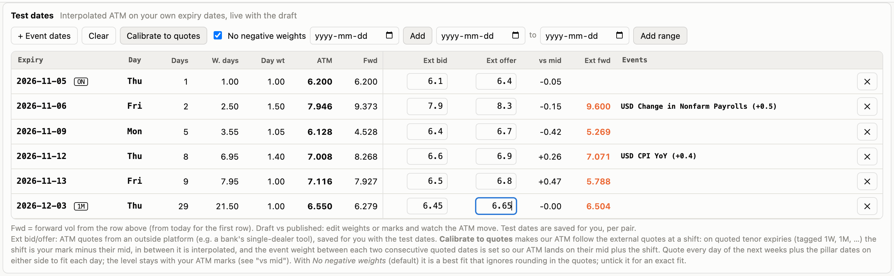
Type your own expiry dates to see the interpolated ATM, calendar and weighted days and the forward vol, live as you edit weights or marks. + Event dates adds each upcoming event's expiry and the weekday before and after it; Add range adds every weekday between two dates. Pillar expiries are tagged (ON, 1M, …).
Ext bid / Ext offer take ATM quotes from an outside platform, for example a bank's single-dealer tool for events months ahead. Type bid, Tab, offer, Enter to jump to the next date's bid. vs mid shows our level against theirs and Ext fwd their forward vol.
Calibrate to quotes makes our ATM follow the external quotes at a shift: on quoted pillars the shift is your mark minus their mid, and in between the event weights are set so that our ATM lands on their mid plus the shift. With No negative weights ticked (the default) it is a best fit that ignores rounding in the quotes; untick it for an exact fit. Each day's weight is split half to each of the pair's two currencies, so the Events table keeps a row per currency. Review the weights, then publish.
Market dailies
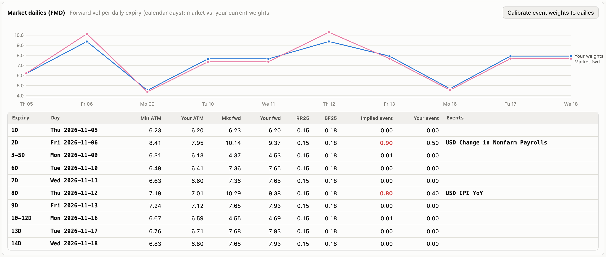
The FMD dailies (1D–14D) against your weights: market forward vol (pink) and yours (blue) per daily expiry. Implied event is the event weight the market prices on that day. Calibrate event weights to dailies writes those implied weights into your draft, half to each currency, keeping the weekend and holiday factors.
The next six months
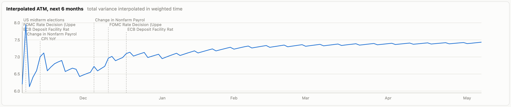
The interpolated ATM for every expiry over the next six months, draft against published, so you can see the bumps your events make.
Sending the weights
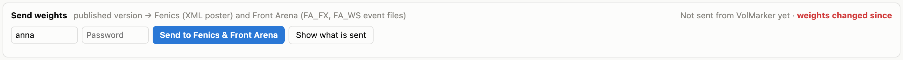
Send to Fenics & Front Arena sends the published version's weights to Fenics (XML poster) and writes the Front Arena event files (FA_FX and FA_WS). Leave the password empty if you are logged in to Fenics. The card says when weights, defaults or the calendar have changed since the last send. Show what is sent lists every line.
11. The event calendar
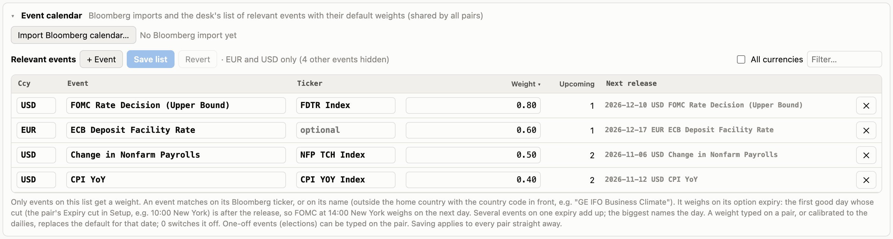
At the bottom of the Event weights tab. It is shared by all pairs.
- Import Bloomberg calendar… takes an ECO export saved as .xlsx (one file per currency or region). Tick the relevant events, set their default weight and import. A new import replaces the previous one for that currency.
- Relevant events is the desk's list. Only events on it get a weight. An event matches on its Bloomberg ticker or its name. The list shows the selected pair's currencies; tick All currencies to see everything. Sorted by weight.
- + Event adds an event to the list: an empty row at the top. Type the currency (
*for any), the name and the weight; Save list stops until they are filled in. The row stays at the top until then. Save list applies it to every pair straight away.
12. Pair settings (Setup)
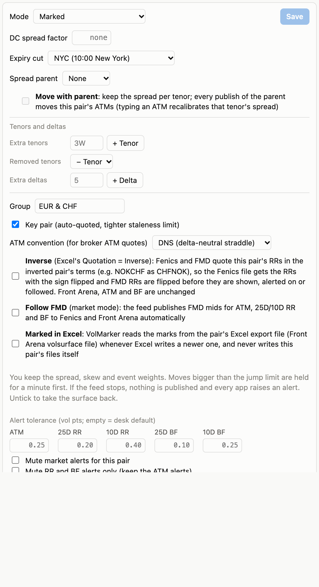
Settings are shared by the whole desk. Change them and press the tab's own Save: this publishes a version with the new settings on the latest marks. Marks you are editing stay in your draft, and the pair's staleness clock is not reset. If someone changed the settings meanwhile, Save stops and says so.
| Setting | Meaning |
|---|---|
| Mode | Marked or Derived (then choose the two bases and Move with bases). |
| DC spread factor | Pairs with a factor of at least 0.01 get a DC spread file (ATM spread × 0.5 × factor). |
| Expiry cut | NYC 10:00 New York, TOK 15:00 Tokyo, and others. Decides which expiry an event weighs on. |
| Spread parent | Adds the spread column; Move with parent keeps the spreads (section 8). |
| Tenors and deltas | Extra tenors (with an optional end date), removed standard tenors and extra deltas (section 4). |
| Group | Where the pair is listed in the sidebar, for everyone. |
| Key pair | Auto-quoted, with the tighter staleness limit. |
| ATM convention | DNS or ATMF, used to match broker ATM quotes. |
| Inverse | Fenics and FMD quote the pair's RRs in the inverted pair's terms (e.g. NOKCHF as CHFNOK), so their sign is flipped going to Fenics and coming from FMD. Bloomberg is fetched for the same standard pair (CHFNOK) and flipped the same way. |
| Market source | FMD, or Bloomberg. With Bloomberg, the grid, alerts and Follow market use Bloomberg's levels while it runs, and FMD's where Bloomberg has none or after it stops (section 14). |
| Follow market | Market mode (section 8). |
| Marked in Excel | Read the marks from Excel's export file (section 8). |
| Alert tolerance | Per-pair tolerances in vol points; empty uses the desk default. Mute all alerts, or only the RR and BF ones. |
New pairs
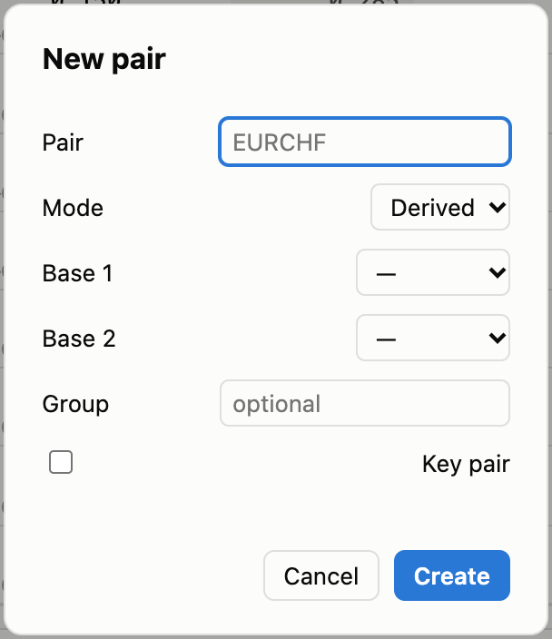
+ New pair in the top bar. Type the pair, choose Marked or Derived (with its two bases), an optional group and whether it is a key pair. If a Front Arena file for the pair already exists, the new pair starts from its marks, so the first publish doesn't blank the file.
13. Market alerts
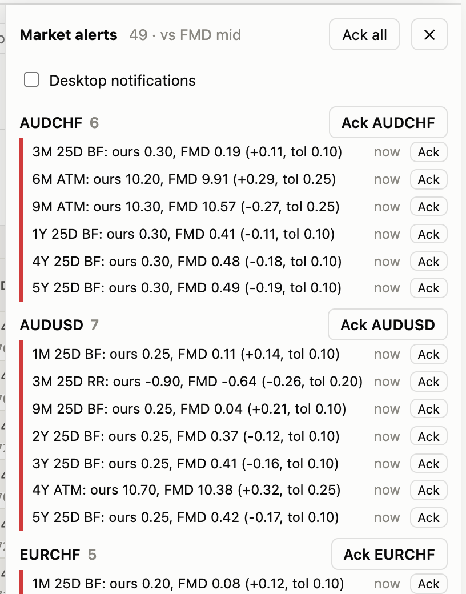
VolMarker compares every pair's published mids (without skew) with FMD and raises an alert when they drift apart by more than the tolerance (by default ATM 0.25, 25D RR 0.20, 10D RR 0.40, 25D BF 0.10, 10D BF 0.25, wider at the short end).
- A gap must last 20 seconds before it alerts, and clears once it is below 80 % of the tolerance, so alerts don't flicker.
- Alerts show in the ⚠ button, the browser tab's title, the sidebar and as red frames in the grid. Tick Desktop notifications to get a pop-up; clicking it opens the pair.
- Ack mutes an alert for you until it clears or the gap grows by another full tolerance. Ack AUDCHF and Ack all do several at once.
- Derived crosses are checked against the FMD cross quote too, so a stale correlation shows up.
- Pairs following FMD get "not updating" and "move held" alerts instead.
- An alert also warns when a pair's export file was changed outside VolMarker (e.g. by Excel).
14. Fenics login, the FMD feed and Bloomberg
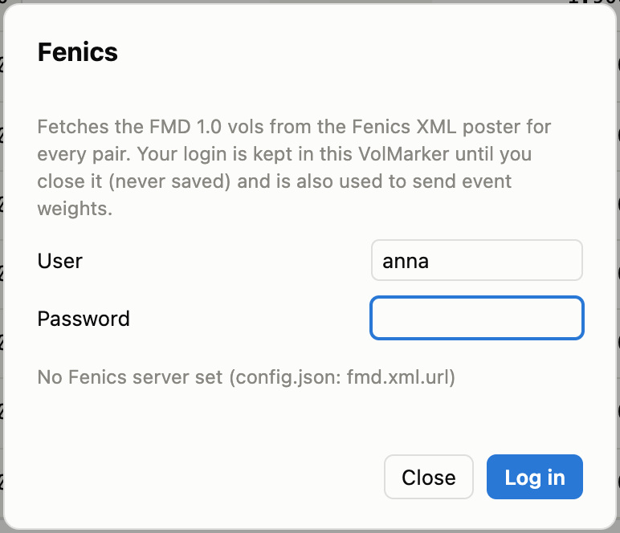
One feed serves the whole desk and writes the market levels to the shared folder; every VolMarker reads them from there. With FMD 1.0, the usual way is Fenics login in the top bar: type your Fenics user and password. That VolMarker then fetches every pair's surface from Fenics until you log out or close it.
- every … s / min next to the button sets how often (default 5 minutes, at least 10 seconds), for FMD 1.0 and Bloomberg alike. Shorten it around an event; it applies at once.
- The password is kept in memory only, never saved. It is also used by Send weights when you leave its password empty.
- Only one feed runs per data folder, so a login is refused while someone else's feed is alive.
- FMD 1.0 gives a bid/offer for the ATM only; RRs and strangles come as mids and show as
midin the grid.
Bloomberg
Pairs whose Market source in Setup is Bloomberg get their levels from Bloomberg. Like the Fenics login, one VolMarker fetches them for the whole desk: click Bloomberg in the top bar on a PC with a Bloomberg Terminal (and Bloomberg's blpapi Python package). The button then reads BBG: you; everyone else sees who runs it.
- Only the Bloomberg pairs are fetched, as often as the every … s / min field next to Fenics login says (the same interval as FMD 1.0; a change applies at once), with their tenors and deltas: e.g.
EURUSDV1M BGN Curncy(ATM),EURUSD25R1MandEURUSD25B1M. FMD keeps fetching those pairs too, and both are recorded. - The grid takes Bloomberg first, and FMD where Bloomberg has no quote; the market choice above the grid shows which brand each quote came from.
- 18:00 and midnight: to stay within Bloomberg's download limits it stops by itself at the next of these. If you stay late, click Bloomberg again: it runs until midnight, and can be started again after that too. The first one in next morning starts it for the day. While it is stopped, Bloomberg pairs show FMD levels, and those that follow the market keep their levels.
- Closing your VolMarker stops it too; someone else can then start it.
15. Display settings
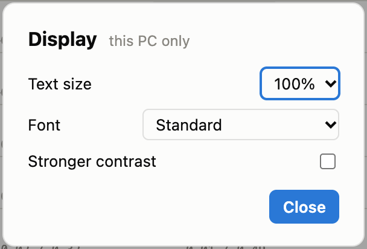
Aa in the top bar. These settings apply to your PC only; nobody else's screen changes.
- Text size: 100 %, 110 %, 125 % or 140 %. The whole page grows. At 140 % the grid is wider than most screens and scrolls sideways.
- Font: Standard; Atkinson Hyperlegible (designed for low vision; falls back to Verdana if its font files are missing); Verdana or Tahoma with Consolas, both standard on Windows.
- Stronger contrast: darker grey text and grid lines, in light and dark mode.
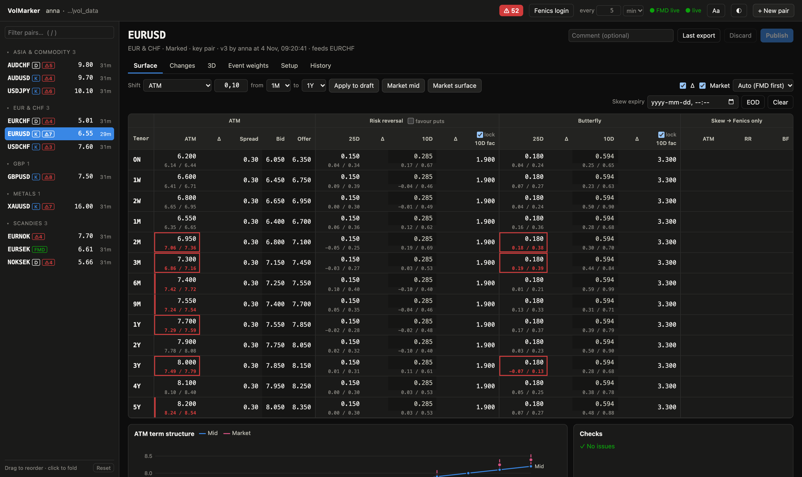
16. How expiry dates are worked out
Tenor expiries follow the FX market convention, the same as the Excel workbook's fx_option_expiry:
| Tenor | Rule |
|---|---|
| ON / 1D | The next weekday. Friday's ON expires on Monday. Holidays don't move it. |
| 1W, 2W | Exactly 7 or 14 calendar days. Holidays don't move them. |
| Months and years | Delivery = spot + the period, as for an FX forward (modified following, end-of-month rule). The expiry is the delivery stepped back by the spot days; it may fall on a holiday. |
- Spot is 2 business days (1 for USDCAD, USDTRY and USDRUB). Holidays of the pair's currencies push it back, except USD and ILS holidays, which only matter if they fall on the value date itself. The value date must be good for both currencies and for USD, crosses included.
- Metals settle on the calendar of their loco: gold and silver (loco London) on GBP holidays, platinum and palladium (loco Zurich) on CHF holidays.
- VolMarker only knows the holidays in
calendar/holidays.csv. A missing holiday moves expiries too, so keep that file up to date for every currency you trade.
17. Files, history and the leader app
What each publish writes
| File | Content |
|---|---|
<PAIR>volsurface.txt (Front Arena) | Pure mids, never skewed. CNH pairs are written as CNY, which is what Front Arena expects. |
<PAIR>volsurface.txt (Fenics) | The quoted surface, skew included. |
<PAIR>spreads.txt | The DC spread file, for pairs with a DC spread factor. |
<PAIR>_date_time.csv | A copy of the Fenics file for every manual publish, as the Excel macro made. |
Files are written under a temporary name and then renamed, so Fenics and Front Arena never read a half-written file.
History and archive
Every version of every pair is kept. Once a day, whole months older than 90 days move into compressed monthly archive files next to the pair's history. Nothing is deleted: the History and Changes tabs read the archive when they need to.
Market history
Every 5 minutes, the leader app also records the FMD quotes of every pair, so the desk can later study how the market moved around events. Only quotes that changed are stored, so quiet periods cost almost nothing. Recording runs in the background and doesn't slow VolMarker down.
Analysing the history
The analysis folder in the data folder holds the desk's vol history as tables you can open in Excel or load into Python or R, one file per month:
| Folder | Content |
|---|---|
marks/ | Every published surface, with its time, pair, tenor, expiry date, ATM mid/bid/offer, spread, RR and BF, and who published it. Extra tenors are rows like the others; extra deltas are in the last column, wings (e.g. rr5=-1.2;bf5=0.9). Includes the dated copies from the Excel years. |
marks_eod/ | Each pair's end-of-day surface. |
atm_eod_wide/ | The end-of-day ATMs of all pairs side by side, one column per pair and tenor. |
market/ | The recorded FMD quotes, one file per day. |
events/ | The event weights in force at the end of each day, one file per day: every pair's upcoming events with the desk default, the weight used and whether it was a default, changed, the pair's own or deleted. Starts on the first morning after the update. |
Every morning VolMarker adds the previous day by itself. The files are compressed (.csv.gz): 7-Zip unpacks them for Excel, and Python and R read them directly.
The leader
One running VolMarker at a time does the desk's shared housekeeping: the daily archive, recording the market, adding the previous day to the analysis tables, then removing past events from the pairs (they stay in the history), expiring skews, removing extra tenors on their end date, reading Excel's files for pairs marked in Excel, and the alert log. It is normally the first one started in the morning. If it closes, another running app takes over within about 45 seconds. Nobody has to do anything about it.
18. Troubleshooting
| Symptom | What to do |
|---|---|
| "… was changed to vN by …" on Publish | Someone else published first. Your draft is kept: look at their change (History), adjust and publish again. |
| No market levels in the grid | The top bar shows FMD off: nobody's feed is running. Log in to Fenics, or ask whoever runs the feed. |
| XL? or an alert that a file was changed outside VolMarker | Excel still exports that pair. Either tick Marked in Excel in Setup, or stop exporting it from Excel. |
| config.json problem in the header | The settings file couldn't be read, often a Windows path with single backslashes. Hover for details, and see section 20. |
| A pair turns stale | Not published within its limit (2 hours for key pairs, 24 for others). Check the marks and publish. |
| Expiry dates look wrong | Check that calendar/holidays.csv has the holidays of both currencies (and GBP or CHF for metals). |
19. Keyboard shortcuts
| Key | Action |
|---|---|
| Ctrl+S | Publish |
| / | Filter pairs |
| Enter · ↓ · ↑ | Next or previous tenor in the grid |
| Tab | Next column |
| Esc | Undo the cell's edit; a second Esc restores the published value |
| Tab / Enter in Ext bid/offer | Bid → offer → next date's bid |
20. Settings for administrators (config.json)
All shared settings live in config.json in the data folder. VolMarker writes it with every default on first start; change only what you need, since a setting left out takes its default. Changes apply without a restart. Folder paths can be absolute or relative to the data folder. In Windows paths, write double backslashes ("…\\vol_data\\exports") or forward slashes ("…/vol_data/exports"). If the file can't be read, every setting falls back to its default and the header shows config.json problem; hover over it for the reason.
Passwords and secrets are never stored in config.json: they come from environment variables or a local file on the PC that runs the feed.
Export folders and files
| Setting | Default | Meaning |
|---|---|---|
fenics_dir | exports/fenics | Where the Fenics vol files go (quoted surface, skew included). |
frontarena_dir | exports/frontarena | Where the Front Arena vol files go (pure mids). |
dc_spread_dir | exports/dc_spread | DC spread files, for pairs with a DC spread factor. |
history_dir | exports/history | A dated copy of the Fenics file for every manual publish. Empty (""): no copies. |
excel_dir | empty | Where Excel writes the files of pairs marked in Excel. Empty: frontarena_dir. |
frontarena_ccy | {"CNH": "CNY"} | Currencies Front Arena knows under another code. Used in Front Arena file names and lines only; Fenics keeps the original code. |
Staleness, history and market data
| Setting | Default | Meaning |
|---|---|---|
stale_minutes_key | 120 | A key pair not published for this long is flagged stale. |
stale_minutes_other | 1440 | The same for all other pairs. |
archive_keep_days | 90 | Versions older than this (whole months) move to the monthly archive. 0 switches archiving off. |
market_stale_minutes | 30 | Broker quotes older than this are shown faded, skipped by Market mid and not followed. |
fmd_brand | auto | Default market source: auto (FMD first), best (best of brands) or one brand. |
fmd_daily_basis | calendar | Dailies: "ND" = today + N calendar days, rolled off the weekend (holidays are expiries too). |
calendar_tz | Europe/Zurich | Time zone of the Bloomberg terminal the calendar is exported from. |
market_record.interval_min | 5 | How often the leader app records the FMD quotes for analysis. 0 switches recording off. |
market_record.brands | ["FMD", "FMD1", "BBG"] | Which brands to record. Empty: all. |
market_record.dir | market_history | Where the recordings go, one compressed file per month. |
analysis_dir | analysis | Where the tables for analysis go. Each morning the leader adds the previous day. Empty (""): off. To fill in the past once, including the dated copies from the Excel years, run python scripts/export_history.py --data …\vol_data; see the README. |
Market data feed (fmd)
| Setting | Meaning |
|---|---|
transport | fix (FMD over FIX), webapi (FMD over HTTPS) or xml (FMD 1.0 polled from the Fenics XML poster, as with the Fenics login button). |
host, port, tls | The FIX server (the vendor's UAT by default). |
sender_comp_id, target_comp_id, session_qualifier, heartbeat | FIX session details from the vendor. |
product, filters | What to subscribe to; filters narrows it, e.g. [[16999, "EUR"]]. |
password_env, password_file | Where the FIX password comes from (environment variable FMD_PASSWORD by default). |
webapi.* | For webapi: base_url, token_url, client_id, the secret's variable or file, ca_file for a proxy that inspects TLS, plus stream tuning (conflation, snapshot_age, idle_timeout). |
xml.url | For xml: the Fenics pricing server. Empty uses weights_export.fenics_url. |
xml.username, xml.password_env, xml.password_file | Login for the command-line feed (the Fenics login button asks instead). |
xml.interval | Seconds between rounds over all pairs (300) for the command-line feed; the button has its own field. |
xml.pairs | Pairs to fetch; empty = every pair in VolMarker. |
xml.atm_type, xml.scale, xml.brand | Fenics' ATM convention (DNS), the factor from its decimals to vol points (100), and the brand name its quotes show under (FMD1). |
xml.retry_missing, xml.timeout, xml.raw_dir | How long before asking again for a pair Fenics has no vols for (3600 s), the request timeout, and an optional folder for the raw answers, for debugging. |
Bloomberg (bbg)
| Setting | Meaning |
|---|---|
source, pair_source | The pricing source in the tickers (BGN), and per-pair exceptions, e.g. {"USDPLN": "BVOL"}. |
tickers | Ticker patterns for atm, rr and bf, with {pair} (the standard pair: CHFNOK for an inverse NOKCHF), {tenor}, {delta} and {source}. |
fields | The Bloomberg fields for bid, offer and mid (PX_BID, PX_ASK, PX_MID). |
atm_type | Bloomberg's ATM convention (DNS), matched against each pair's ATM convention. |
batch | Tickers per request (200). How often is the interval field in the top bar. |
stop_at | A run stops at the next of these times, in calendar_tz (["18:00", "00:00"]); it can be started again at once. []: never. |
quiet_hours | From and to (["18:00", "07:00"]): Bloomberg not running then raises no alert for pairs that follow it. []: always alert. |
Event weights (weights_export, cuts)
| Setting | Meaning |
|---|---|
weights_export.fenics_url | The Fenics pricing server that Send weights posts to (/xmlposter is added). |
weights_export.fenics_dir, fa_fx_dir, fa_ws_dir | Where the copy of the Fenics message and the Front Arena FA_FX and FA_WS event files go. |
weights_export.date_format | Date format in the Front Arena event files (%Y-%m-%d). |
weights_export.cut_events_other_ccy | true: on a pair whose cut is not NYC, an event the cut moves to another expiry goes to Fenics under the pair's other currency (see Send weights). false sends it under its own currency, as before. |
cuts | The expiry cuts offered in Setup, each a time zone and time, e.g. "WAR": {"tz": "Europe/Warsaw", "time": "11:00"}. times sets another time on some weekdays, e.g. {"Fri": "12:00"}. |
Derived pairs, Follow market and alerts
| Setting | Default | Meaning |
|---|---|---|
propagation.min_change | 0.005 | After a market-driven move, a derived or parent-following pair is republished only if an ATM moves at least this much… |
propagation.min_corr_change | 0.005 | …or, on a cross whose ATMs stay put, the implied correlation moves at least this much… |
propagation.min_interval_s | 5 | …and at most this often. Manual publishes always go through. |
follow.min_change | 0.05 | Follow market publishes when any mark has moved at least this much (vol points). |
follow.min_publish_interval_s | 15 | At most one automatic publish per pair this often. |
follow.max_jump | ATM 1.0, 25D RR 0.75, 10D RR 1.5, 25D BF 0.5, 10D BF 1.0 | Bigger moves are held… |
follow.jump_confirm_s | 60 | …until they have lasted this long. |
follow.interval_s | 2 | How often the follower looks at the market. |
alerts.enabled | true | Market alerts on or off for the desk. |
alerts.basis | mid | mid: distance to the market mid; range: distance outside the bid/offer. |
alerts.tolerance | ATM 0.25, 25D RR 0.20, 10D RR 0.40, 25D BF 0.10, 10D BF 0.25 | Default tolerances; each pair can override them in Setup. |
alerts.tenor_scale | ON ×2, 1W ×1.5, 2W ×1.25 | Wider tolerances at the short end. |
alerts.confirm_s | 20 | A gap must last this long before it alerts. |
alerts.clear_ratio | 0.8 | An alert clears once the gap is below this share of the tolerance. |
Other files in the data folder
| File | Content |
|---|---|
calendar/holidays.csv | Holidays, one per line: ccy,date. Drives expiry dates and holiday weights. |
calendar/events.csv | Manual dated events (e.g. elections): ccy,date,description. |
calendar/event_defaults.csv | The desk's relevant events and default weights (edited in the app). |
calendar/bloomberg/ | The last Bloomberg calendar import per currency. |
pairs/<PAIR>/ | Every version of the pair, plus its monthly archive. |
market_history/ | The recorded FMD quotes, one compressed file per month: only quotes that changed since the last round, and a full set at the start of each day. |
analysis/ | The tables for analysis (section 17), one file per month, and _state.json, which records the last day added. |
users/ | Each trader's own sidebar order, folded groups and test dates. |
market/, alerts/, locks/ | Market levels from the feed, the alert log, and short-lived lock files. |